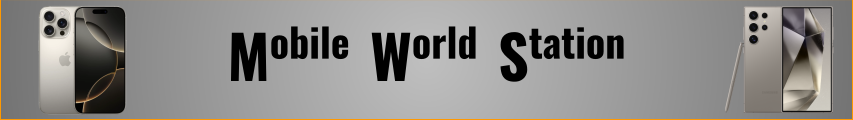
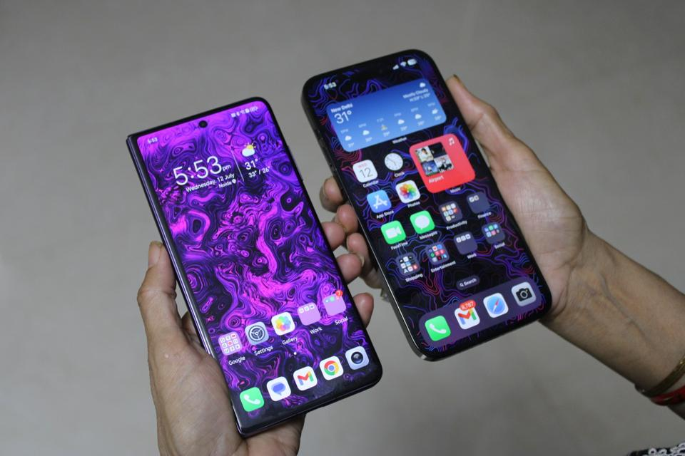

Here at Mobile World Station, we want to help you finding a perfect phone easier for YOU! We also help customers find good providers and accessories for their devices. With this its your choice to make and find your phone that matches you!
To start your journey to finding YOUR phone use the "Navigation Bar" to explore and find out!
How we can help - We'll help you find your phone thats got the good specifications and statistics, from Samsung to Apple devices we have a selection of devices to compare. We also have compatible accessories to go with your device or devices.